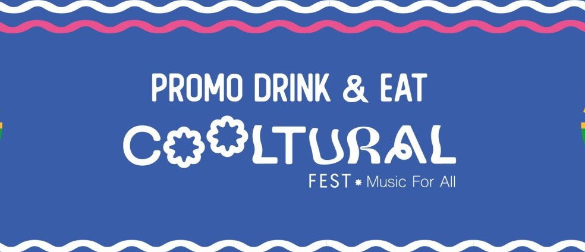

Red informática
Una red informática es un conjunto de dispositivos conectados entre sí que comparten información y recursos. Permite la comunicación entre ordenadores, móviles, servidores y otros equipos mediante cables o conexiones inalámbricas.

Una red informática es un conjunto de dispositivos conectados entre sí que comparten información y recursos. Permite la comunicación entre ordenadores, móviles, servidores y otros equipos mediante cables o conexiones inalámbricas.
Una red LAN (Local Area Network) es una red de área local que conecta dispositivos en un espacio reducido, como una casa, un instituto o una oficina. Una red WAN (Wide Area Network) es una red de área amplia que conecta redes entre sí a gran distancia, como ocurre entre ciudades o países. Internet es la mayor red WAN del mundo, ya que conecta millones de redes y dispositivos a nivel global.
Un proveedor de servicios de Internet es la empresa que ofrece conexión a Internet a los usuarios. Algunos ejemplos en España son Movistar, Vodafone, Orange o MásMóvil.
Un dominio es el nombre que identifica a una página web en Internet. Sustituye a la dirección IP para que sea más fácil de recordar. Por ejemplo, google.com es un dominio.
Un protocolo informático es un conjunto de normas que permiten que los dispositivos se comuniquen entre sí y entiendan la información que intercambian.
Una dirección IP es un número que identifica a cada dispositivo conectado a una red. La IP pública es la que identifica a un dispositivo en Internet. La IP privada es la que identifica a un dispositivo dentro de una red local.
Una URL (Uniform Resource Locator) es la dirección completa que permite acceder a un recurso en Internet. Incluye el protocolo, el dominio y, en algunos casos, la ruta específica dentro de la página.
El DNS (Domain Name System) es el sistema que traduce los nombres de dominio en direcciones IP, permitiendo que el navegador encuentre el servidor correcto.
HTTP es el protocolo que permite la transferencia de información entre el navegador y el servidor web. HTTPS es la versión segura de HTTP, ya que cifra la información para proteger los datos del usuario.
Una página web estática muestra siempre el mismo contenido y no cambia según el usuario. Una página web dinámica genera contenido en tiempo real y puede adaptarse al usuario o a la base de datos.
El alojamiento web es el servicio que permite guardar una página web en un servidor para que pueda ser accesible desde Internet. Algunos ejemplos son Hostinger, SiteGround o GoDaddy.
Un CMS (Content Management System) es un sistema que permite crear y gestionar páginas web sin necesidad de programar desde cero. Ejemplos: WordPress, Joomla o Drupal. Ventajas: facilidad de uso, rapidez y gran variedad de plantillas. Inconvenientes: menor personalización avanzada y posibles problemas de seguridad si no se actualiza.
En esta sección puedes acceder al documento completo de la tarea de investigación: